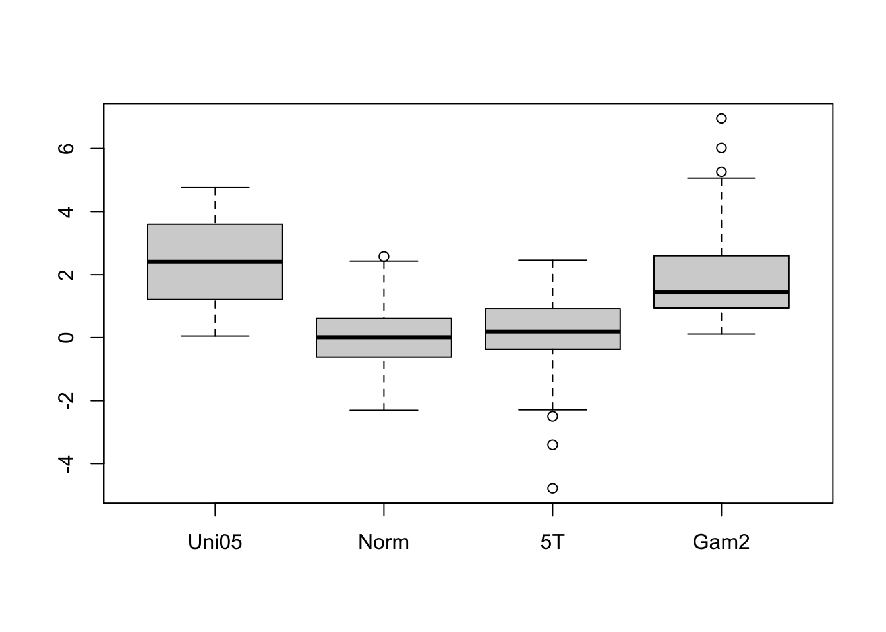
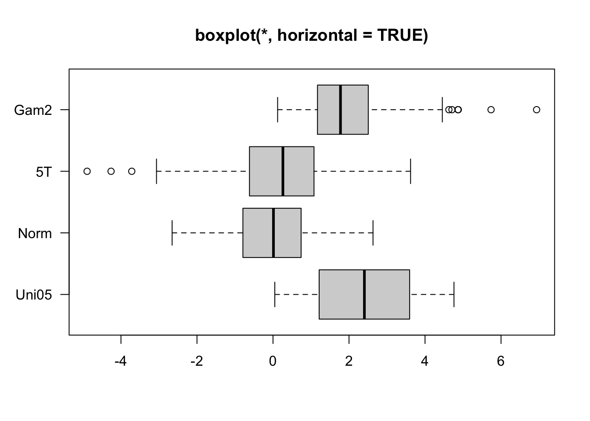

Code
getwd() # check your working directory[1] "/Users/mmarraff/Documents/Classes/161.250/Data_Analysis_Course/workshops"Code
# setwd() # if you know the directory you want R to look inR and RStudioIf you have not installed R and RStudio, refer to the study guide for some instructions.
To start this workshop download the source from the class website. You can now save this to your computer and make notes in this document.
R basicsWorking directory
In RStudio, set the working directory under the Session menu. It is a good idea to start your analysis as a new project in the File menu so that the entire work and data files can be saved and re-opened easily later on.
getwd() # check your working directory[1] "/Users/mmarraff/Documents/Classes/161.250/Data_Analysis_Course/workshops"# setwd() # if you know the directory you want R to look inR/RStudio as a calculator
In RStudio, use the File >> New File >> R Script menu to type or copy and paste the commands and execute them
Type 1+1 to see 2 on the console (or ->Run the code in RStudio).
1+1[1] 2Type a=1;b=2;a/b to see 0.5.
a=1;b=2;a/b[1] 0.5Note that semicolon separates various commands. It is optional to use them as long as you type the commands one by one as follows:
a=1
b=2
a/b[1] 0.5There are many built-in functions. Try the following.
27^3 sqrt(10) round(sqrt(10),2) abs(-4) log(10) exp(10) rnorm(100) mean(rnorm(100)) sd(rnorm(100))
# your code goes here
# make yourself notes about what each of these functions doesYou may wonder what was the base used for log(10). A help on this can be obtained by placing a question mark (?) before log as ?log or by help(log)
There are a few exceptions. The command ?if wont work but ?"if" will. In other words, ?"log" or help("log") are safer ways of getting help on “built-in” functions.
In RStudio, use the R Editor (menu File > New Script) to type the commands and submit them (shortcut: CNTRL+R).`
Why does this code not work?
my_variable <- 10
my_varıableMake a variable with a sequence of numbers between 1 and 10. Look up the function seq() in the help menu for tips.
# your code goes hereThe command example() will produce the available HELP examples, and will work for most functions. For example, try example(boxplot). You will see many boxplot examples such as the following:
example("boxplot")
boxplt> ## boxplot on a formula:
boxplt> boxplot(count ~ spray, data = InsectSprays, col = "lightgray")
boxplt> # *add* notches (somewhat funny here <--> warning "notches .. outside hinges"):
boxplt> boxplot(count ~ spray, data = InsectSprays,
boxplt+ notch = TRUE, add = TRUE, col = "blue")Warning in (function (z, notch = FALSE, width = NULL, varwidth = FALSE, : some
notches went outside hinges ('box'): maybe set notch=FALSE
boxplt> boxplot(decrease ~ treatment, data = OrchardSprays, col = "bisque",
boxplt+ log = "y")
boxplt> ## horizontal=TRUE, switching y <--> x :
boxplt> boxplot(decrease ~ treatment, data = OrchardSprays, col = "bisque",
boxplt+ log = "x", horizontal=TRUE)
boxplt> rb <- boxplot(decrease ~ treatment, data = OrchardSprays, col = "bisque")
boxplt> title("Comparing boxplot()s and non-robust mean +/- SD")
boxplt> mn.t <- tapply(OrchardSprays$decrease, OrchardSprays$treatment, mean)
boxplt> sd.t <- tapply(OrchardSprays$decrease, OrchardSprays$treatment, sd)
boxplt> xi <- 0.3 + seq(rb$n)
boxplt> points(xi, mn.t, col = "orange", pch = 18)
boxplt> arrows(xi, mn.t - sd.t, xi, mn.t + sd.t,
boxplt+ code = 3, col = "pink", angle = 75, length = .1)
boxplt> ## boxplot on a matrix:
boxplt> mat <- cbind(Uni05 = (1:100)/21, Norm = rnorm(100),
boxplt+ `5T` = rt(100, df = 5), Gam2 = rgamma(100, shape = 2))
boxplt> boxplot(mat) # directly, calling boxplot.matrix()
boxplt> ## boxplot on a data frame:
boxplt> df. <- as.data.frame(mat)
boxplt> par(las = 1) # all axis labels horizontal
boxplt> boxplot(df., main = "boxplot(*, horizontal = TRUE)", horizontal = TRUE)
boxplt> ## Using 'at = ' and adding boxplots -- example idea by Roger Bivand :
boxplt> boxplot(len ~ dose, data = ToothGrowth,
boxplt+ boxwex = 0.25, at = 1:3 - 0.2,
boxplt+ subset = supp == "VC", col = "yellow",
boxplt+ main = "Guinea Pigs' Tooth Growth",
boxplt+ xlab = "Vitamin C dose mg",
boxplt+ ylab = "tooth length",
boxplt+ xlim = c(0.5, 3.5), ylim = c(0, 35), yaxs = "i")
boxplt> boxplot(len ~ dose, data = ToothGrowth, add = TRUE,
boxplt+ boxwex = 0.25, at = 1:3 + 0.2,
boxplt+ subset = supp == "OJ", col = "orange")
boxplt> legend(2, 9, c("Ascorbic acid", "Orange juice"),
boxplt+ fill = c("yellow", "orange"))
boxplt> ## With less effort (slightly different) using factor *interaction*:
boxplt> boxplot(len ~ dose:supp, data = ToothGrowth,
boxplt+ boxwex = 0.5, col = c("orange", "yellow"),
boxplt+ main = "Guinea Pigs' Tooth Growth",
boxplt+ xlab = "Vitamin C dose mg", ylab = "tooth length",
boxplt+ sep = ":", lex.order = TRUE, ylim = c(0, 35), yaxs = "i")
boxplt> ## more examples in help(bxp)
boxplt>
boxplt>
boxplt> Explore the help menu for the function plot Generic X-Y Plotting. What line of code can you use to access this file?
# your code goes hereWrite code to generate an example of the function plot using a built in dataset InsectSprays. You can use ?InsectSprays to find out more about this data.
# your code goes hereHow would you generate a plot with lines for your data? Use the help menu to find the argument you might need to change and what you would change it to. Explain in words and then in code.
# your code goes hereUse your answers to the previous three exercises to write a short description of what the function plot does. Include what information you need to put into the function and what you might expect it to return.
So far we have seen base R. These are the built in functions available on R. Since R is a free computing resource people have developed additional functions which they package in a library. Majority of libraries are housed on CRAN and you can install them using the function install.packages().
tidyverseSo we will be largely using the tidyverse suite of packages; see https://www.tidyverse.org/.
Let’s load that package now:
install.packages('tidyverse') # if you do not have tidyverse you will need to install it first
# you only have to install packages once per machine (computer)
# notice eval= FALSE in the chunk so this code does not run everytime this document is renderedlibrary(tidyverse) # you need to load a library every R sessionA huge number of other dedicated packages are available to improve the power of R. Many R packages are hosted at a repository called CRAN (Comprehensive R Archive Network). The package install option within RStudio can download and install these optional packages under the menu Packages >> Install. You can also do this using the command install.packages. For example
install.packages(c("tidyverse", "car"), dependencies = TRUE)
This command installs two packages tidyverse and car in one go.
Contributed R packages are grouped in various headings at https://cran.r-project.org/web/views/. They can be installed in bulk using the ctv package command install.views().
You might have to install quite a few packages as you work through this course.
If the data file is stored locally, you should put the data into the same directory as your Quarto or R markdown script. That way, you can (usually) load it easily without having to type the full pathway (e.g., mydata.csv rather than C:/Users/anhsmith/Work/Project1/data/mydata.csv). Better yet, Projects make this much easier.
For example,
read_csv("../data/rangitikei.csv")New names:
Rows: 33 Columns: 11
── Column specification
──────────────────────────────────────────────────────── Delimiter: "," dbl
(11): ...1, id, loc, time, w.e, cl, wind, temp, river, people, vehicle
ℹ Use `spec()` to retrieve the full column specification for this data. ℹ
Specify the column types or set `show_col_types = FALSE` to quiet this message.
• `` -> `...1`# A tibble: 33 × 11
...1 id loc time w.e cl wind temp river people vehicle
<dbl> <dbl> <dbl> <dbl> <dbl> <dbl> <dbl> <dbl> <dbl> <dbl> <dbl>
1 1 1 1 2 1 1 2 2 1 37 15
2 2 2 1 1 1 1 2 1 2 23 6
3 3 3 1 2 1 1 2 2 3 87 31
4 4 4 2 2 1 1 2 1 1 86 27
5 5 5 2 1 1 1 2 2 2 19 2
6 6 6 2 2 1 2 1 3 3 136 23
7 7 7 1 2 2 2 2 2 3 14 8
8 8 8 1 2 1 2 2 2 3 67 26
9 9 9 1 1 2 1 3 1 2 4 3
10 10 10 2 2 1 2 2 2 3 127 45
# ℹ 23 more rowsWe’d usually want to store the data as an object though, like so:
rangitikei <- read_csv("../data/rangitikei.csv")New names:
Rows: 33 Columns: 11
── Column specification
──────────────────────────────────────────────────────── Delimiter: "," dbl
(11): ...1, id, loc, time, w.e, cl, wind, temp, river, people, vehicle
ℹ Use `spec()` to retrieve the full column specification for this data. ℹ
Specify the column types or set `show_col_types = FALSE` to quiet this message.
• `` -> `...1`Now the data are available in R as an object.
glimpse(rangitikei)Rows: 33
Columns: 11
$ ...1 <dbl> 1, 2, 3, 4, 5, 6, 7, 8, 9, 10, 11, 12, 13, 14, 15, 16, 17, 18,…
$ id <dbl> 1, 2, 3, 4, 5, 6, 7, 8, 9, 10, 11, 12, 13, 14, 15, 16, 17, 18,…
$ loc <dbl> 1, 1, 1, 2, 2, 2, 1, 1, 1, 2, 2, 2, 2, 1, 1, 1, 2, 2, 2, 1, 1,…
$ time <dbl> 2, 1, 2, 2, 1, 2, 2, 2, 1, 2, 2, 2, 2, 2, 2, 2, 2, 1, 2, 1, 2,…
$ w.e <dbl> 1, 1, 1, 1, 1, 1, 2, 1, 2, 1, 2, 1, 1, 1, 1, 2, 2, 1, 1, 1, 2,…
$ cl <dbl> 1, 1, 1, 1, 1, 2, 2, 2, 1, 2, 1, 2, 1, 1, 1, 2, 2, 2, 1, 2, 2,…
$ wind <dbl> 2, 2, 2, 2, 2, 1, 2, 2, 3, 2, 2, 2, 1, 2, 2, 2, 2, 2, 2, 3, 2,…
$ temp <dbl> 2, 1, 2, 1, 2, 3, 2, 2, 1, 2, 2, 3, 1, 2, 2, 2, 3, 2, 2, 2, 2,…
$ river <dbl> 1, 2, 3, 1, 2, 3, 3, 3, 2, 3, 1, 3, 1, 3, 1, 1, 2, 1, 2, 2, 3,…
$ people <dbl> 37, 23, 87, 86, 19, 136, 14, 67, 4, 127, 43, 190, 50, 47, 32, …
$ vehicle <dbl> 15, 6, 31, 27, 2, 23, 8, 26, 3, 45, 7, 53, 22, 18, 10, 3, 11, …The above example uses a file that says .csv this is called a file extension. CSV stands for comma seperated values. The data is stored on the computer as a series of values (numbers or text) with commas in between. The file extension tells the computer how to read the document, it then puts each value in a cell of a table.
Other common file types include .txt or .xlxs. Txt stands for a tab delineated file and xlxs are for files generated with excel.
In R you can use multiple functions to read in data including read.csv, read_csv, read.table and read_excel. read_csv is in the readr library and read_excel is in the readxl library. Load these library, then explore the help menu for each of these four function, what are the differences?
Note: that Excel files usually contain blanks for missing or unreported data or allocate many rows for variable description, which can cause issues while importing them. Is there anything in the help menu you can do to help avoid this?
# your code goes hereTry importing the Telomeres data file (in Excel format) available at
https://rs.figshare.com/ndownloader/files/22850096
First download the data, put it in a directory with this quarto document. Then write code to import the file into R and save it as telomers.
# your code goes hereConsider the study guide dataset rangitikei.csv (Recreational Use of the Rangitikei river) again. The first 10 rows of this dataset are shown below:
X id loc time w.e cl wind temp river people vehicle
1 1 1 1 2 1 1 2 2 1 37 15
2 2 2 1 1 1 1 2 1 2 23 6
3 3 3 1 2 1 1 2 2 3 87 31
4 4 4 2 2 1 1 2 1 1 86 27
5 5 5 2 1 1 1 2 2 2 19 2
6 6 6 2 2 1 2 1 3 3 136 23
7 7 7 1 2 2 2 2 2 3 14 8
8 8 8 1 2 1 2 2 2 3 67 26
9 9 9 1 1 2 1 3 1 2 4 3
10 10 10 2 2 1 2 2 2 3 127 45The description of the variables is given below:
loc - two locations were surveyed, coded 1, 2
time - time of day, 1 for morning, 2 for afternoon
w.e - coded 1 for weekend, 2 for weekday
cl- cloud cover, 1 for >50%, 2 for <50%
wind- coded 1 through 4 for increasing wind speed
temp - temperature, 1, 2 or 3 increasing temp
river- murkiness of river in 3 increasing categories
people - number of people at that location and time
vehicle- number of vehicles at that location at that time
How many rows are in my.data? How many columns? How can you find that in R?
# your code goes hereFind the mean of vehicle and the median of people using built in R functions.
# your code goes hereOne of the simplest manipulations on a batch of data we may do is to change the data type say numeric to character. For example, the television viewing time data in the text file tv.csv is read into a dataframe by the command line
my.tv.data <- read.csv(
"../data/tv.csv",
header =TRUE
)We can improve the read.csv command to recognise the data type while reading the table as follows, using the read_csv command from the readr package:
my.tv.data2 <- read_csv(
"~/Documents/Classes/161.250/tv.csv",
col_types = "nfcc"
)
# check if it worked
glimpse(my.tv.data2)Rows: 46
Columns: 4
$ TELETIME <dbl> 1482, 2018, 1849, 857, 2027, 2368, 1783, 1769, 2534, 2366, 15…
$ SEX <fct> 1, 1, 1, 1, 2, 2, 2, 2, 1, 1, 1, 1, 1, 2, 2, 1, 1, 2, 2, 2, 2…
$ SCHOOL <chr> "1", "1", "1", "1", "1", "1", "1", "1", "1", "1", "1", "1", "…
$ STANDARD <chr> "4", "4", "4", "4", "4", "4", "4", "4", "3", "3", "3", "3", "…The argument col_types = "nfcc" stands for {numeric, factor, character, character}, to match the order of the columns.
Explore quarto documents by copying the code from the website and putting it into a new quarto document in your R.